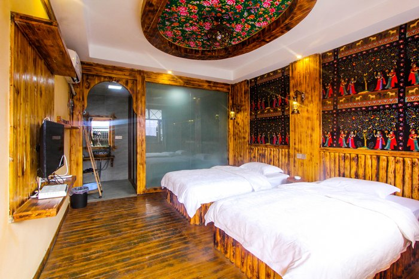
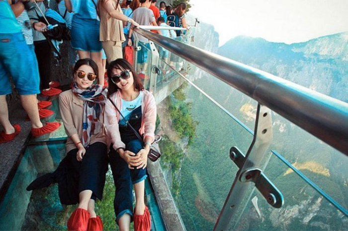

.jpg)
12月份去张家界旅游如何玩才能省钱，省心，省力？还可以住山顶、看日出！不排队
我叫李若灵......
我和闺蜜是暑假去张家界，玩了4天，把我们游玩的感受推荐给你，希望对你有帮助！ 我们玩4天一起才花费才1000多元/人，个人觉得非常的划算，我们是住景区山顶村里面的特色客栈，看了日出和村里的篝火晚会
费用都包含了：
1、张家界国家森林公园门票248元,天门山玻璃栈道261元，中国最美的古城--凤凰古城148元
2、全程的交通费，路程较远
3、还包含住3晚酒店(条件舒适、位置极佳，而且进入景区不用排队)，强烈推荐景区特色客栈，32个赞
4、还有景区大部分的用餐（景区自己用餐比较贵）
5、全程导游顾问服务费（导游耐心、周到），是旅途中最重要的一个环节
个人觉得费用非常的划算了
并且玩的很自由、轻松、尽心
全程安排：
“张家界导游”珊珊美女 ——电话/微信：18867297304
【点击复制】很可爱、非常耐心的土家族小阿妹~
计划去张家界玩的可以扫珊珊的微信二维码咨询
出发之前，也在网上联系了几家经过对比，看珊珊美女导游的评价最高，最终选择珊珊导游，事实证明，非常靠谱，给我们安排的是 高端品质自由行。
提前找的珊珊预订好的门票
大大省去了排队的时间
温馨提示：张家界景区为实名制，尤其是天门山和大峡谷玻璃桥，每天分时间段，限量售票。临时可能会买不到票或是下午不好的时间段。
珊珊她们家景区特色客栈每日接待人数有限，每天最多住100人....计划近期去张家界旅游的可加微信咨询
珊珊暑假只给提前预定的客人预留房间
珊珊人非常好，全程很是照顾人。
如果要去张家界游玩的建议可以联系她微信：18867297304【点击复制】
目前大多张家界的景区都需要排队很长时间
提前一个月前就和珊珊预订好的，所以省去了排队的时间
旅游体会
珊珊导游安排了专人到机场接我们（到张家界的航班都是很晚才到），见面之后签合同，一切都很顺利
旅游嘛，认识一个熟人还是不错的，有问题大家问珊珊导游吧，微信： 18867297304【点击复制】
非常高兴认识她
她给安排的是品质自由行小团，对我们来说，这是一次开心、难忘、享受的张家界之旅。
推荐指数：★★★★★
住宿指数：★★★★
游玩指数：★★★★
风景指数：★★★★★
导游人品：★★★★★
经验内容仅供参考，如果您需解决具体问题(尤其法律、医学等领域)，建议您详细咨询相关领域专业人士。